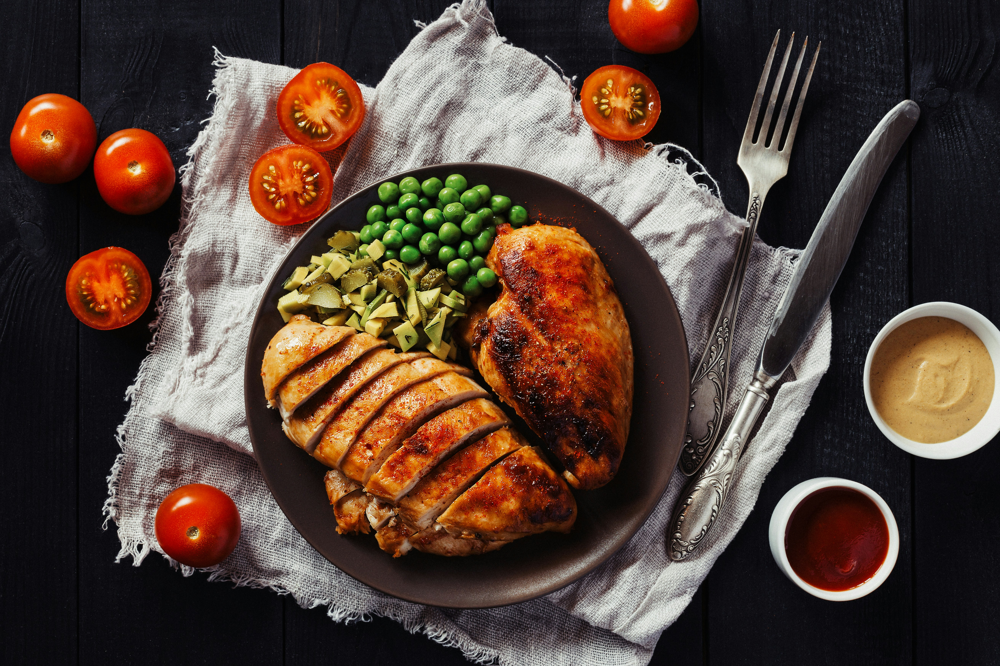

Grilled Chicken with vegetables

Ingredients:
- Chicken breast or Chicken leg
- Green peas
- Carrots
- Cabbage
- Onion
- Vegetable Oil
- Tomato sauce
Simple steps:
- Season the chicken with salt,pepper and garlic.
- Grill or fry the chicken over medium heat untill golden brown and fully cooked.
- Prepare the vegetables: saute chopped onion,carrots and cabbage in a little oil.
- Cook the peas separately untill tender, then add them to the vegetables.
- Prepare a simple source with tomto with your prefered seasoning if desired.
- Serve: place the chicken on a plate with the vegetables and peas, then add the sauce.
Home